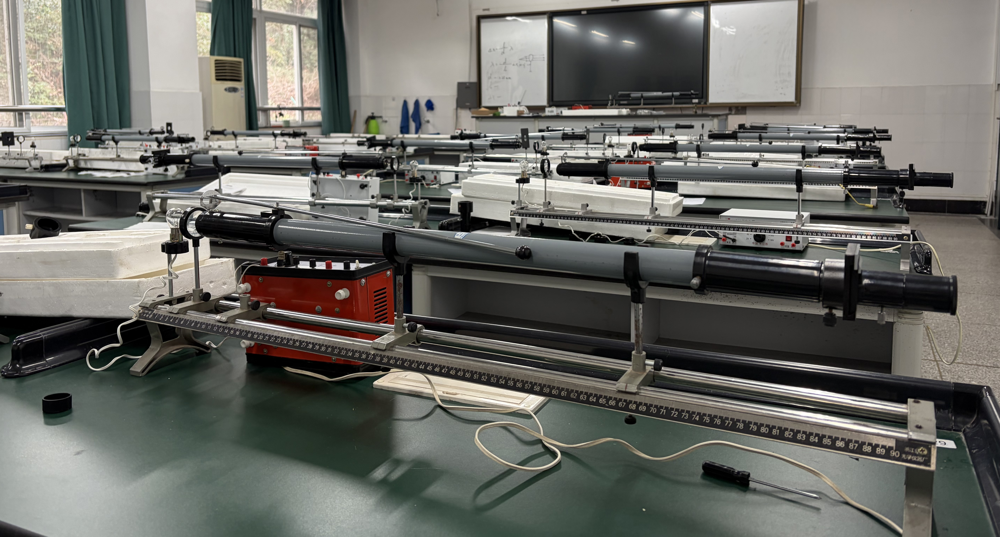
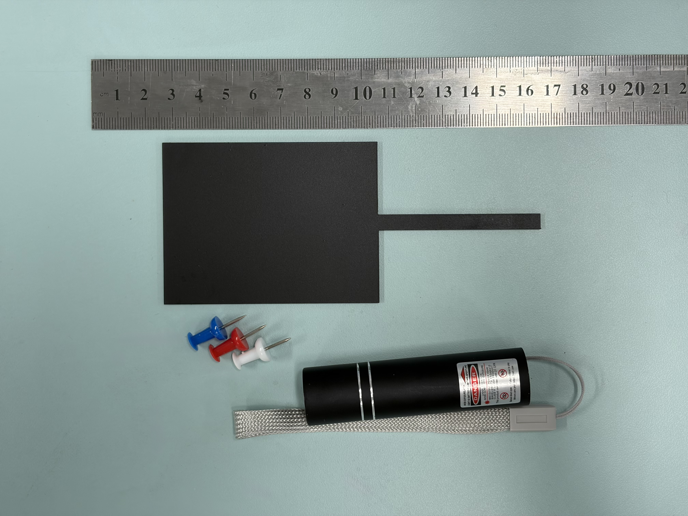
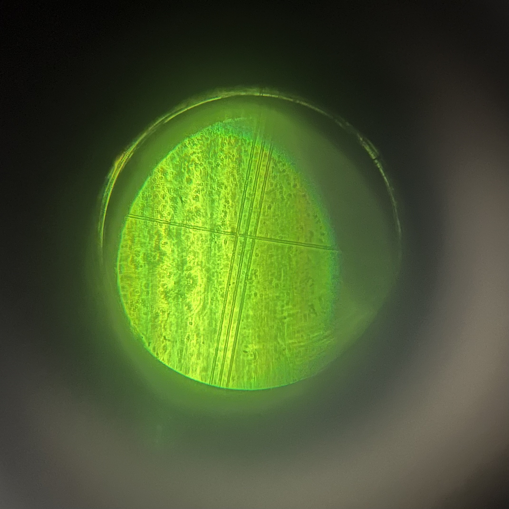
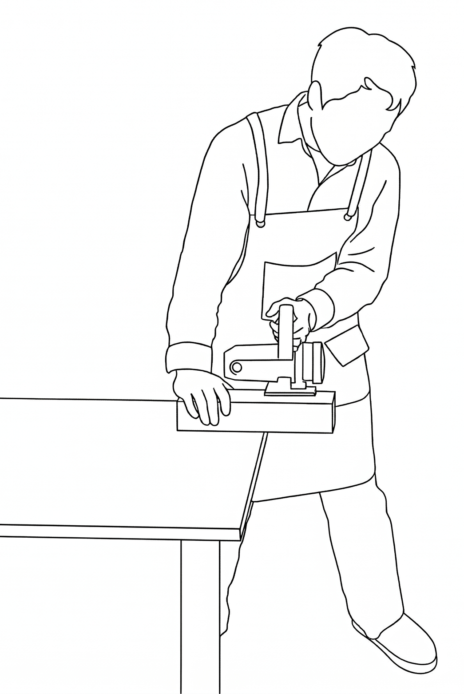
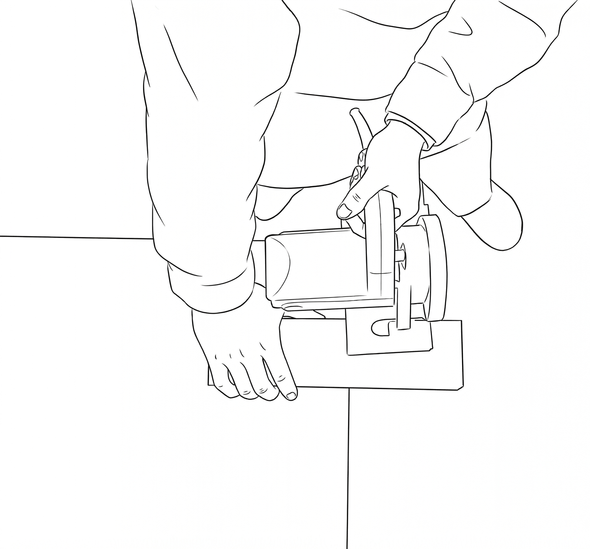
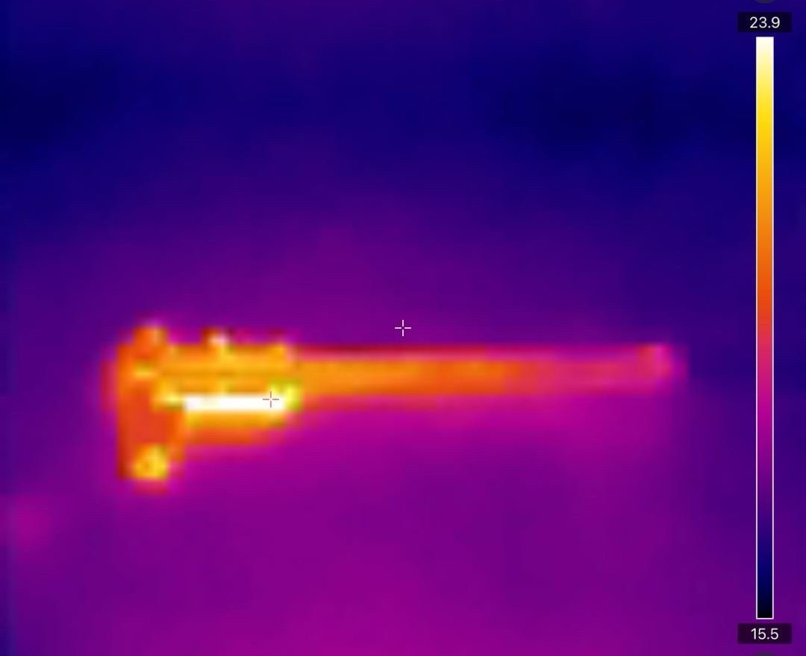
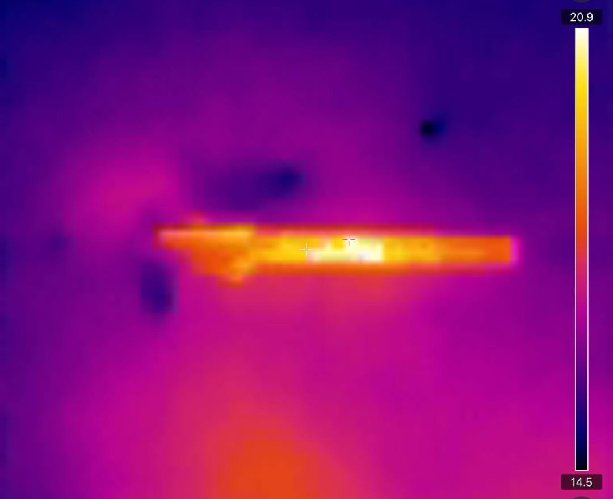
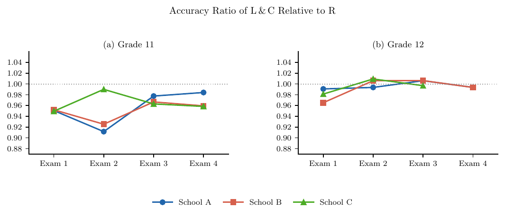
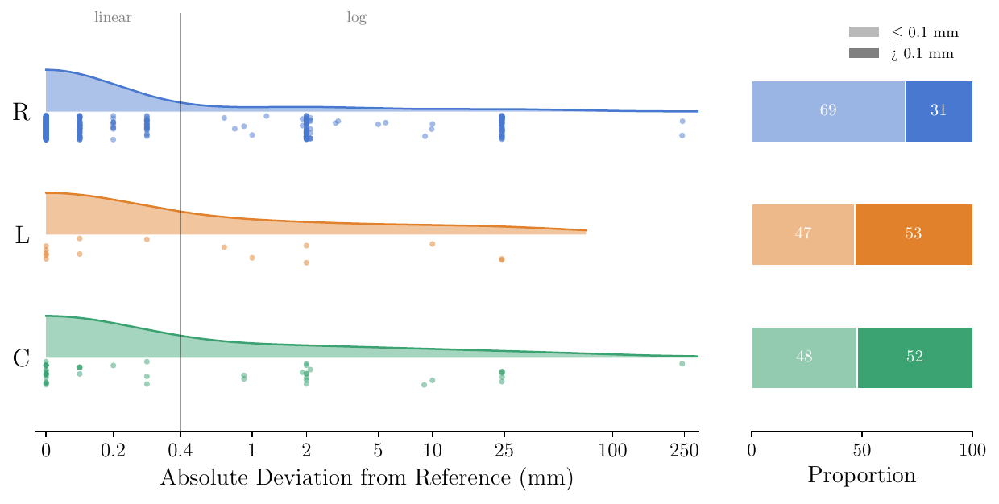
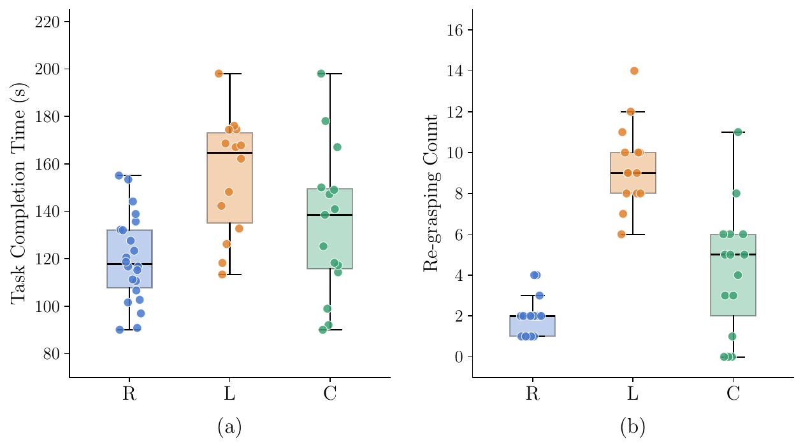

-
When the Pattern Comes Too Easily: What an AI Simulation Takes Away in the Optics Lab
A classroom study of 96 students compares learning Young's double-slit interference via physical apparatus versus an AI-generated simulation. The AI group scored higher on the written test but struggled badly on an unscripted diffraction task. AI aids test readiness, but removing too much experimental friction can erode the empirical judgment real inquiry needs.







-
Letting Time Lie Down: Visualizing and Quantifying Simple Harmonic Motion
A three-step sequence makes simple harmonic motion visible by unfolding its time axis into space. A laser on a spring–mass oscillator draws a glowing sinusoid; a free browser tool fits smartphone video to a sinusoid in seconds; pooled student data confirm T² ∝ m/k_eff to within 1%. It runs on equipment a school already owns.


-
No Left-Hander Left Behind: Finding the Right Way in the Physics Laboratory
Physics lab tools and safety procedures assume right-handed use. Across a 4,226-student survey, caliper tests, and video coding, left-handed students showed higher measurement errors, slower times, and riskier circular-saw positioning—despite equal academic performance. The paper offers inclusive fixes like handedness audits and symmetric instruments.







